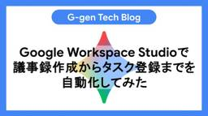

G-gen Tech Blog
https://blog.g-gen.co.jp/
Google Cloudの情報発信を行う技術ブログ
フィード

2026年6月のイチオシGoogle Cloud・Google Workspaceアップデート
G-gen Tech Blog
G-gen の杉村です。2026年6月に発表された、Google Cloud や Google Workspace のイチオシアップデートをまとめてご紹介します。記載は全て、記事公開当時のものですのでご留意ください。 はじめに Google Cloud のアップデート BigQuery Editions の最小課金時間が1秒になる fluid scaling が一般公開（GA） Cloud Interconnect のシングルリージョン構成で 99.99% SLA BigQuery の生成 AI 関数で上限（クォータ）が任意に設定できるように 利用料の BigQuery エクスポートで FOC…
2日前

BigQueryのスケジュールドクエリを解説
G-gen Tech Blog
G-gen の本間です。BigQuery の自動化機能であるスケジュールドクエリ（Scheduled queries）を解説します。 概要 スケジュールドクエリとは ユースケース 料金 主な機能と特徴 スケジュール設定 クエリ結果の書き込み 書き込み方式の概要 DML を使用した書き込み 宛先テーブルを指定した書き込み ランタイムパラメータの利用 権限と IAM ロール クエリの実行主体 スケジュール作成者に必要な権限 クエリ実行主体に必要な権限 注意点と制限事項 毎正時（00分）指定における重複実行のリスク 実行遅延の可能性 概要 スケジュールドクエリとは スケジュールドクエリ（Schedu…
4日前

Google Workspace Studioで議事録作成からタスク登録までを自動化してみた 4
4
G-gen Tech Blog
G-gen の福井です。Google Workspace Studio のループ機能を使用して、Google Meet の文字起こしから議事録を作成し、会議で決まったタスクを Google Tasks へ自動登録するフローを作成する手順を紹介します。 はじめに 当記事の概要 Google Workspace Studio とは ループ機能（Repeat for each）とは 作成するフロー 処理の全体像 注意事項 フローの作成手順 開始条件 : フォルダへのアイテム追加 議事録の作成 議事録ファイル名の生成 Google ドキュメントへの保存 タスク一覧の抽出 ループによるタスク登録 動作確…
8日前

Google Workspace Studioでリストのループ処理機能を使ってみた
G-gen Tech Blog
G-gen の西田です。ノーコードで Google Workspace のタスクを自動化できる Google Workspace Studio に導入された、リストデータを繰り返し処理できるループ処理機能について解説します。 はじめに Google Workspace Studio とは ループ処理機能の概要 検証シナリオ 設定手順 動作確認 はじめに Google Workspace Studio とは Google Workspace Studio とは、プログラミングを行うことなく、Google Workspace の各アプリケーションや Gemini を組み合わせた自動化フローを作成で…
11日前
Google Cloudのセキュリティ対策を5つの観点で徹底整理
G-gen Tech Blog
G-gen の武井です。当記事では、Google Cloud のセキュリティ対策を観点ごとに整理し、網羅的にまとめます。 はじめに 全体像 証跡管理 概要 関連サービス・機能 Cloud Audit Logs Cloud Logging Cloud Asset Inventory 予防的統制（統制の基盤を整備する） 概要 関連サービス・機能 組織（Organization） 階層構造 組織を使わないリスク 予防的統制（ID・認証基盤を整備する） 概要 関連サービス・機能 Google Workspace / Cloud Identity MFA / パスキー Workforce Identit…
14日前
LookerのGit連携とバージョン管理
G-gen Tech Blog
株式会社 G-gen の菊池です。Looker では LookML （Looker Modeling Language）を用いてデータモデルを定義しますが、これらのコードはすべて Git リポジトリで管理されます。当記事では、Git 連携の仕組みや品質管理設定について解説します。 Looker におけるバージョン管理の概要 LookML プロジェクトと Git リポジトリの連携 開発モードと本番環境の分離 IDE 内での Git 操作 Git リポジトリとの接続方法 概要 HTTPS を使用した接続 SSH を使用した接続 ベア Git リポジトリ デフォルトのワークフロー 概要 開発ブランチ…
16日前
データサイエンスエージェント（Google Cloud）とClaude Codeを比較してみた
G-gen Tech Blog
G-gen のバロキです。当記事では、Anthropic の Claude Code と Google Cloud のデータサイエンスエージェントという 2 つの AI ツールに、同一のデータセットと指示を与えて比較しました。自動生成されるデータ分析ノートブックに、どのような違いが生まれるかを検証しました。 概要 はじめに データサイエンスエージェントとは Claude Code とは 検証の前提条件 使用したデータセット 投入したプロンプト 評価の観点 生成されたノートブックの全体像 データサイエンスエージェントの特徴 Claude Code の特徴 観点別の比較 コードの量と構造 可視化の…
18日前
Googleが公開した公式スキルリポジトリgoogle/skillsを解説
G-gen Tech Blog
G-gen の福井です。当記事では、Google が公開している公式 Agent Skills リポジトリ google/skills について、リポジトリの概要から、収録されているスキルの内容を解説します。 概要 google/skills リポジトリとは 公開背景 ライセンス 使い方 製品別スキル gemini-api alloydb-basics bigquery-basics cloud-run-basics cloud-sql-basics firebase-basics gke-basics Well-Architected Framework 柱別スキル google-cloud…
21日前
Cloud SQLのインデックスアドバイザーを解説
G-gen Tech Blog
G-gen の今村です。当記事では、Cloud SQL で提供されているパフォーマンス最適化機能の1つであるインデックスアドバイザーについて解説します。 概要 インデックスアドバイザーとは 仕組み 料金と要件 料金 対象エディションと要件 有効化の手順 推奨事項の確認 推薦インデックスの確認方法 画面に表示される評価データの内容 Gemini による支援 推奨事項の適用 概要 インデックスアドバイザーとは Cloud SQL のインデックスアドバイザー機能は、Cloud SQL で実行されたクエリを自動的に分析し、パフォーマンス向上につながる最適なインデックスを提案する機能です。当機能は Cl…
23日前
Google SecOpsのAIエージェントでアラートの一次対応を自動化する
G-gen Tech Blog
G-gen の三浦です。当記事では、Google SecOps の AI エージェントである トリアージと調査エージェント（TIN）と、それを Playbook に組み込む エージェントの自動化（Agentic Automation）を使い、アラートの一次対応を自動化した結果を紹介します。 概要 Google SecOps とは トリアージと調査エージェント（TIN）とは TIN の無償トライアル エージェントの自動化（Agentic Automation）とは 注意点 検証の手順 TIN の有効化 アラートの確認 概要 TIN なし（有効化前のアラート） TIN あり（有効化後のアラート） …
25日前
Google CloudのAgent Identityを解説
G-gen Tech Blog
G-gen の佐々木です。当記事では、Google Cloud にデプロイした AI エージェントに固有のアイデンティティを付与する Agent Identity の仕組みと、Agent Identity を用いた認証方式について解説します。 概要 Agent Identity とは サービスアカウントとの違い Agent Identity の基本 SPIFFE 形式の識別子 エージェント認証情報 セキュリティとガバナンス 認証方式 サポートされる認証方式 認証マネージャー 認証プロバイダー Agent Identity の設定例 概要 Agent Identity とは Agent Iden…
1ヶ月前
Google WorkspaceのAI機能に関するセキュリティガイド
G-gen Tech Blog
G-gen の川村です。Google Workspace の生成 AI ツールである Gemini アプリや NotebookLM を安全に運用するためのセキュリティ設定や、管理者が注意すべき点について解説します。 はじめに 概要 付属の生成 AI ツール 生成 AI ツールの外部共有機能 エンタープライズグレードのデータ保護 機能へのアクセス制御 生成 AI サービスのアクセス制御 サイドパネルのアクセス制御 CAA によるゼロトラスト制御 シャドー IT 対策と端末管理 シークレットウィンドウの使用禁止 ウェブプロキシによる個人アカウントの使用禁止 GCPW のエンドポイント保護 Chro…
1ヶ月前
Gemini CLIからAntigravity CLIへ移行してCloud Runアプリを開発してみた
G-gen Tech Blog
G-gen の三浦です。当記事では、Gemini CLI から Antigravity CLI への移行を検証し、移行後に簡単な Web アプリを作成して Cloud Run へデプロイした結果を紹介します。 前提知識 Google Antigravity とは Antigravity CLI とは Gemini CLI の提供終了と Antigravity CLI への移行 概要 Antigravity CLI と Gemini CLI の違い 移行作業の対象 検証手順 移行検証用の設定 概要 Agent Skills MCP サーバー Extensions Antigravity CLI …
1ヶ月前
2026年5月のイチオシGoogle Cloud・Google Workspaceアップデート
G-gen Tech Blog
G-gen の杉村です。2026年5月に発表された、Google Cloud や Google Workspace のイチオシアップデートをまとめてご紹介します。記載は全て、記事公開当時のものですのでご留意ください。 はじめに Google I/O 2026 が開催 Google Cloud のアップデート SCC で Compliance Manager がプロジェクト単位で有効化可能に Agent Search で agentic retrieval が Allowlist 付き一般公開 BigQuery の reservation groups が一般公開（GA） Google Clou…
1ヶ月前
Cloud MonitoringのMCPサーバーを使ってインシデント対処を自動化してみた
G-gen Tech Blog
G-gen の勝島です。当記事では、Gemini Enterprise Agent Platform と Cloud Monitoring の MCP サーバーを組み合わせて、エラーログの検知から AI による原因分析、Slack 通知までを自動化します。 はじめに Gemini Enterprise Agent Platform とは MCP（Model Context Protocol）とは 当記事について 背景と構成 本構成の狙い システムの構成 環境構築 環境変数の設定 API の有効化 ログルーティングの設定 サービスアカウントと IAM ロール アプリケーションの実装 ディレクトリ…
1ヶ月前
Agent Skillsを徹底解説！
G-gen Tech Blog
G-gen の福井です。当記事では、AI エージェントツールに専門知識やワークフローを追加するためのオープンフォーマットである Agent Skills について、概念や動作の仕組み、スキルの構造、使い方などを解説します。 概要 Agent Skills とは Skills が可能にすること Skills の実体 Agent Skills の仕組み 基本的な動作 コンテキスト肥大化の防止 Skills と MCP の関係 Skills の構造 ディレクトリ構成 SKILL.md の中身 使い方 対応ツール Skills ファイルの配置場所 インストール Gemini CLI からスキルを呼び出…
1ヶ月前
Managed Agents API on Agent Platformを解説
G-gen Tech Blog
G-gen の佐々木です。当記事では、単一の API 呼び出しでマネージドな自律エージェントを構築・実行できるサービスである Managed Agents API on Agent Platform について解説します。 概要 Agent Platform とは Managed Agents API on Agent Platform とは プレビュー段階での注意点 他のエージェント構築手段との比較 Managed Agents API の基本 2つの API ツールの利用 料金 サンドボックス環境について プリインストール済ソフトウェアと組み込みツール ファイルシステムと永続化 スキルのマウ…
1ヶ月前
共有ドライブの操作別に必要なアクセス権を解説
G-gen Tech Blog
G-gen の西田です。当記事では、Google Workspace の共有ドライブのデータに対する操作に対して必要なアクセス権について解説します。 共有ドライブのアクセス権の仕組み 共有ドライブの最上位レベルでのアクセス権付与 個別ファイルでのアクセス権付与 外部への共有 データの移動 共有ドライブのアクセス権の仕組み 共有ドライブは Google ドライブの機能であり、チームでファイルを保存、検索、アクセスすることができます。 アクセス権は「共有ドライブの最上位レベル」、「フォルダごと」、「ファイルごと」にそれぞれ付与することができ、付与されたアクセス権によって実行できる操作が異なります。…
1ヶ月前
Lookerの派生テーブルの機能と選定基準を解説
G-gen Tech Blog
G-genの菊池です。Looker におけるデータモデリングにおいて、複雑な分析や集計を効率化する派生テーブル（Derived Tables）について、その機能分類と選定の基準を解説します。 Looker の派生テーブルとは 定義方法による分類 概要 ネイティブ派生テーブル SQL ベースの派生テーブル データの保持方法による分類 概要 一時的な派生テーブル 永続的な派生テーブル（PDT） 永続性戦略 概要 トリガーベースの戦略 保存期間ベースの戦略 データベースが管理する戦略（マテリアライズドビュー） 増分 PDT 概要 利用するための必須条件 Looker 派生テーブルの選定基準 概要 定…
2ヶ月前
Google Cloudの課金レポートの見方とTipsを解説
G-gen Tech Blog
G-gen の杉村です。当記事では、Google Cloud を管理・運用していくうえで必須となる課金レポートの基本的な見方について、またコスト分析と対策を効率的に行うためのテクニックについて解説します。 課金レポートとは 課金レポートへのアクセスと権限 概要 請求先アカウントのスコープで閲覧 アクセス権限 アクセス手順 プロジェクトのスコープ アクセス権限 アクセス手順 レポートの基本的な見方 グループ化条件とフィルタ サービス単位での表示の限界 SKU とは グループ条件を SKU に設定する 表示対象の絞り込み その他のコスト分析テクニック 料金スパイクの原因を調査 特に料金が発生してい…
2ヶ月前
Gemini Enterprise Agent Platformを徹底解説！
G-gen Tech Blog
G-gen の佐々木です。当記事では、Google Cloud の AI エージェント開発プラットフォームである Gemini Enterprise Agent Platform の概要を解説します。 Gemini Enterprise Agent Platform とは Studio 概要 Agent Studio Agents - Build 概要 Agent Garden（プレビュー） Agent Development Kit Managed Agents API（プレビュー） MCP サーバー スキルレジストリ（プレビュー） RAG Engine（プレビュー） Vector Sear…
2ヶ月前
ADK×Agent RuntimeでMemory Bank機能を使用する
G-gen Tech Blog
G-gen の佐々木です。当記事では、Agent Development Kit（ADK）で開発した AI エージェントで Agent Runtime（旧称 : Vertex AI Agent Engine）の Memory Bank 機能を使用することで、セッション間で情報を保持できるエージェントを構築していきます。 構成 当記事で使用するもの Agent Development Kit（ADK） Agent Runtime Memory Bank Cloud Run Memory Bank を使用するエージェントの開発 エージェントの概要 ディレクトリ構成 プロジェクトの準備 エージェント…
2ヶ月前
What’s new with Google Workspace（Google Cloud Next '26速報）
G-gen Tech Blog
G-gen の荒井です。当記事では、Google Cloud Next '26 で発表された Google Workspace に関する新機能について、公式の投稿記事およびセッションの内容をもとに紹介します。 G-gen Tech Blog では、現地でイベントに参加したメンバーや、日本から情報をウォッチするメンバーが、Google Cloud Next '26 に関連する記事を発信します。 blog.g-gen.co.jp はじめに Keynote Features Workspace Intelligence（GA） Rapid Enterprise Migration（GA） Drive…
2ヶ月前
2026年4月のイチオシGoogle Cloud・Google Workspaceアップデート
G-gen Tech Blog
G-gen の杉村です。2026年4月に発表された、Google Cloud や Google Workspace のイチオシアップデートをまとめてご紹介します。記載は全て、記事公開当時のものですのでご留意ください。 はじめに Google Cloud Next '26 の開催 プロダクトの名称変更 概要 Looker Studio → Data Studio（和名: データポータル） Dataplex Universal Catalog → Knowledge Catalog Cloud Composer → Managed Service for Apache Airflow BigLak…
2ヶ月前
Accelerate CI/CD with coding agents（Google Cloud Next '26速報）
G-gen Tech Blog
G-gen の高宮です。当記事は、Google Cloud Next '26 in Las Vegas の 3 日目に行われたブレイクアウトセッション「 Accelerate CI/CD with coding agents 」のレポートです。 G-gen Tech Blog では、現地でイベントに参加したメンバーや、日本から情報をウォッチするメンバーが、Google Cloud Next '26 に関連する記事を発信します。 blog.g-gen.co.jp セッションの概要 ソフトウェア開発の加速と CI/CD の課題 Google CI/CD Extension の概要と特徴 Googl…
2ヶ月前
Gemini Enterprise × ADKでスプレッドシートを操作するAIエージェントを開発してみた
G-gen Tech Blog
G-gen の河野です。当記事では、Gemini Enterprise と Agent Development Kit （ADK）を組み合わせて、Google Workspace のリソースを操作する独自の AI エージェントを開発しデプロイする手順を解説します。 はじめに Gemini Enterprise とは Agent Development Kit（ADK）とは 当記事について 背景と構成 なぜ独自開発が必要なのか エージェントの構成 ADK エージェントの実装 ディレクトリ構成 agent.py requirements.txt __init__.py .env Agent Eng…
2ヶ月前
Transform cloud operations and management with generative AI（Google Cloud Next '26速報）
G-gen Tech Blog
G-gen の高宮です。当記事は、Google Cloud Next '26 in Las Vegas の1日目に行われたブレイクアウトセッション「 Transform cloud operations and management with generative AI 」のレポートです。 G-gen Tech Blog では、現地でイベントに参加したメンバーや、日本から情報をウォッチするメンバーが、Google Cloud Next '26 に関連する記事を発信します。 blog.g-gen.co.jp セッションの概要 ソフトウェア開発の加速と運用側の課題 Gemini Cloud Ass…
2ヶ月前
Humanoid robots in pediatric care（Google Cloud Next '26速報）
G-gen Tech Blog
G-gen の山崎です。当記事は、Google Cloud Next '26 in Las Vegas の3日目に行われたライトニングトークセッション「Humanoid robots in pediatric care」のレポートです。 G-gen Tech Blog では、現地でイベントに参加したメンバーや、日本から情報をウォッチするメンバーが、Google Cloud Next '26 に関連する記事を発信します。 blog.g-gen.co.jp セッションの概要 現在の高齢化社会における課題 ケアワーカーの人員不足 小児医療の現場における課題 高齢者介護の現場における課題 ヒューマノイ…
2ヶ月前
Transform meetings into outcomes using Google Workspace with Gemini（Google Cloud Next '26速報）
G-gen Tech Blog
G-gen の荒井です。当記事は Google Cloud Next '26 in Las Vegas の3日目に行われたブレイクアウトセッション「Transform meetings into outcomes using Google Workspace with Gemini」のレポートです。 G-gen Tech Blog では、現地でイベントに参加したメンバーや、日本から情報をウォッチするメンバーが、Google Cloud Next '26 に関連する記事を発信します。 blog.g-gen.co.jp セッションの概要 会議が抱える課題と Gemini による解決 会議における課…
2ヶ月前
Built-in defense: The next evolution of Security Command Center for AI-era（Google Cloud Next '26速報）
G-gen Tech Blog
G-gen の武井です。当記事では、Google Cloud Next '26 in Las Vegas のブレイクアウトセッション「Built-in defense: The next evolution of Security Command Center for AI-era」について、速報レポートをお届けします。 G-gen Tech Blog では、現地でイベントに参加したメンバーや、日本から情報をウォッチするメンバーが、Google Cloud Next '26 に関連する記事を発信します。 blog.g-gen.co.jp セッションの概要 プラットフォームネイティブなセキュリテ…
2ヶ月前